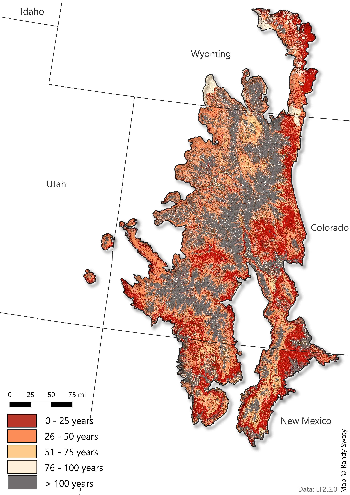

Past: Historical Ecosystems
LANDFIRE’s Biophysical Settings (BpSs)
BpS models represent the vegetation system that may have been dominant on the landscape prior to Euro-American settlement. These models are based on a combination of the current environment and an approximation of the historical disturbance regime. Read more.
Check out this 3-minute tutorial for a quick refresher on the basics of Biophysical Settings Models.
Use this page as a starting point to explore the most prevalent BpSs in the SRFSN Southern Rockies Subregion. In addition to the charts and maps, the historical disturbance data can be directly accessed using this site.
Summary
- Prior to European colonization the Rocky Mountain Subalpine Dry-Mesic Spruce-Fir Forest and Woodland BpS was most dominant at ~15%.
- The top 10 BpSs covered roughly 75% of the subregion.
- BpSs ranged from steppes to shrublands to sub-alpine forests.
Scroll down to explore the “historical disturbances per ecosystem” using the interactive web app.
Most Prevalent Biophysical Settings

Historic Annual Acres Burned (per ecosystem)

Top Historical Fire Regimes

Historical Disturbances (per ecosystem)
Data Table
| ZONE | BPS_MODEL | BPS_NAME | GROUPVEG | FRI_REPLAC | FRI_MIXED | FRI_SURFAC | FRG_NEW | ACRES | REL_PERCENT |
|---|---|---|---|---|---|---|---|---|---|
| 28 | 10550_15_28 | Rocky Mountain Subalpine Dry-Mesic Spruce-Fir Forest and Woodland | Conifer | 199 | 435 | NA | IV-B | 5,231,487 | 14.5 |
| 28 | 10610_22_27_28 | Inter-Mountain Basins Aspen-Mixed Conifer Forest and Woodland | Hardwood-Conifer | 78 | 73 | 126 | I-C | 4,466,687 | 12.4 |
| 28 | 10540_28 | Southern Rocky Mountain Ponderosa Pine Woodland | Conifer | 505 | 159 | 24 | I-C | 2,585,065 | 7.2 |
| 28 | 10510_28 | Southern Rocky Mountain Dry-Mesic Montane Mixed Conifer Forest and Woodland | Conifer | 325 | 54 | 32 | I-C | 2,110,732 | 5.9 |
| 28 | 10500_16_23_28 | Rocky Mountain Lodgepole Pine Forest | Conifer | 152 | NA | 640 | IV-B | 1,862,385 | 5.2 |
| 28 | 10160_15_28 | Colorado Plateau Pinyon-Juniper Woodland | Conifer | 430 | 194 | 2,245 | III-B | 1,708,311 | 4.7 |
| 28 | 10110_28 | Rocky Mountain Aspen Forest and Woodland | Hardwood | 145 | 1,732 | 844 | IV-B | 1,460,557 | 4.1 |
| 28 | 11260_6_12_17_18_28 | Inter-Mountain Basins Montane Sagebrush Steppe | Shrubland | 49 | NA | NA | IV-A | 1,428,792 | 4.0 |
| 28 | 10520_28 | Southern Rocky Mountain Mesic Montane Mixed Conifer Forest and Woodland | Conifer | 202 | 144 | 153 | III-A | 1,204,503 | 3.3 |
| 28 | 11590_28 | Rocky Mountain Montane Riparian Systems | Riparian | 270 | NA | 79 | III-A | 960,368 | 2.7 |
| 28 | 11460_15_16_23_24_25_28 | Southern Rocky Mountain Montane-Subalpine Grassland | Grassland | 20 | NA | 21 | I-B | 875,732 | 2.4 |
| NA | NA | Barren-Rock/Sand/Clay | Barren-Rock/Sand/Clay | NA | NA | NA | NA | 840,018 | 2.3 |
| 28 | 10801_21_22_28 | Inter-Mountain Basins Big Sagebrush Shrubland-Basin Big Sagebrush | Shrubland | 72 | NA | NA | IV-A | 817,776 | 2.3 |
| 23 | 11070_23_24 | Rocky Mountain Gambel Oak-Mixed Montane Shrubland | Shrubland | 51 | 150 | NA | III-A | 734,274 | 2.0 |
| 28 | 11070_25_28 | Rocky Mountain Gambel Oak-Mixed Montane Shrubland | Shrubland | 50 | 171 | NA | III-A | 716,291 | 2.0 |
| 29 | 11260_20_29_33 | Inter-Mountain Basins Montane Sagebrush Steppe | Shrubland | 50 | NA | NA | IV-A | 566,031 | 1.6 |
| 23 | 10110_16_23_24 | Rocky Mountain Aspen Forest and Woodland | Hardwood | 59 | 50 | NA | I-C | 529,162 | 1.5 |
| 29 | 11410_29_30 | Northwestern Great Plains Mixedgrass Prairie | Grassland | 13 | NA | NA | II-B | 548,935 | 1.5 |
| 28 | 11600_15_28 | Rocky Mountain Subalpine/Upper Montane Riparian Systems | Riparian | 273 | NA | 80 | III-A | 465,859 | 1.3 |
| 28 | 11430_9_19_21_28 | Rocky Mountain Alpine Fell-Field | Grassland | 525 | NA | NA | V-B | 361,030 | 1.0 |
| 23 | 10540_16_23_24 | Southern Rocky Mountain Ponderosa Pine Woodland | Conifer | 280 | 226 | 20 | I-C | 316,460 | 0.9 |
| 28 | 11170_13_15_28 | Southern Rocky Mountain Ponderosa Pine Savanna | Conifer | 368 | NA | 11 | I-B | 311,615 | 0.9 |
| 29 | 11250_20_29_30_31_33 | Inter-Mountain Basins Big Sagebrush Steppe | Shrubland | 92 | NA | NA | IV-A | 336,796 | 0.9 |
| 22 | 11260_22 | Inter-Mountain Basins Montane Sagebrush Steppe | Shrubland | 86 | NA | NA | IV-A | 273,656 | 0.8 |
| 23 | 10860_13_16_17_18_21_23 | Rocky Mountain Lower Montane-Foothill Shrubland | Shrubland | 102 | 28 | NA | I-C | 286,716 | 0.8 |
| 28 | 10860_28 | Rocky Mountain Lower Montane-Foothill Shrubland | Shrubland | 73 | 210 | NA | III-A | 239,078 | 0.7 |
| 28 | 11270_28 | Inter-Mountain Basins Semi-Desert Shrub-Steppe | Shrubland | 120 | NA | NA | IV-B | 251,428 | 0.7 |
| 29 | 10540_29 | Southern Rocky Mountain Ponderosa Pine Woodland | Conifer | 303 | 265 | 20 | I-C | 242,207 | 0.7 |
| 27 | 10590_27_33 | Southern Rocky Mountain Pinyon-Juniper Woodland | Conifer | 327 | 406 | 566 | III-B | 245,585 | 0.7 |
| 22 | 10802_21_22_28 | Inter-Mountain Basins Big Sagebrush Shrubland-Wyoming Big Sagebrush | Shrubland | 98 | NA | NA | IV-A | 163,845 | 0.5 |
| 23 | 11261_16_23_24 | Inter-Mountain Basins Montane Sagebrush Steppe-Mountain Big Sagebrush | Shrubland | 49 | NA | NA | IV-A | 177,769 | 0.5 |
| 28 | 11440_12_16_19_28 | Rocky Mountain Alpine Turf | Grassland | 207 | NA | NA | V-A | 170,531 | 0.5 |
| NA | NA | Open Water | Open Water | NA | NA | NA | NA | 155,298 | 0.4 |
| NA | NA | Perennial Ice/Snow | Perennial Ice/Snow | NA | NA | NA | NA | 151,485 | 0.4 |
| 23 | 10160_16_23_24_25 | Colorado Plateau Pinyon-Juniper Woodland | Conifer | 435 | 195 | 2,265 | III-B | 145,524 | 0.4 |
| 23 | 10510_15_16_17_22_23_24_25 | Southern Rocky Mountain Dry-Mesic Montane Mixed Conifer Forest and Woodland | Conifer | 90 | 77 | 14 | I-B | 149,395 | 0.4 |
| 28 | 10560_15_28 | Rocky Mountain Subalpine Mesic-Wet Spruce-Fir Forest and Woodland | Conifer | 199 | 435 | NA | IV-B | 151,034 | 0.4 |
| 23 | 10611_16_23_24 | Inter-Mountain Basins Aspen-Mixed Conifer Forest and Woodland-Low Elevation | Hardwood-Conifer | 43 | 13 | NA | I-B | 106,906 | 0.3 |
| 23 | 10612_16_23 | Inter-Mountain Basins Aspen-Mixed Conifer Forest and Woodland-High Elevation | Hardwood-Conifer | 70 | 60 | NA | I-C | 106,252 | 0.3 |
| 23 | 11590_16_23_24_26 | Rocky Mountain Montane Riparian Systems | Riparian | 270 | NA | 79 | III-A | 124,023 | 0.3 |
| 28 | 10010 | Inter-Mountain Basins Sparsely Vegetated Systems | Sparse | NA | NA | NA | NA | 95,551 | 0.3 |
| 28 | 11530_28 | Inter-Mountain Basins Greasewood Flat | Shrubland | 204 | NA | NA | V-A | 98,666 | 0.3 |
| 29 | 10550_29 | Rocky Mountain Subalpine Dry-Mesic Spruce-Fir Forest and Woodland | Conifer | 113 | NA | NA | IV-B | 97,169 | 0.3 |
| 25 | 11190_24_25 | Southern Rocky Mountain Juniper Woodland and Savanna | Conifer | 503 | 217 | 32 | I-C | 94,488 | 0.3 |
| 27 | 11070_27_33 | Rocky Mountain Gambel Oak-Mixed Montane Shrubland | Shrubland | 50 | NA | NA | IV-A | 92,312 | 0.3 |
| 27 | 11470_27_33 | Western Great Plains Foothill and Piedmont Grassland | Grassland | 24 | NA | NA | II-C | 97,047 | 0.3 |
| 28 | 10720_28 | Wyoming Basins Dwarf Sagebrush Shrubland and Steppe | Shrubland | 125 | NA | NA | IV-B | 70,040 | 0.2 |
| 28 | 10570_28 | Rocky Mountain Subalpine-Montane Limber-Bristlecone Pine Woodland | Conifer | 499 | 202 | NA | III-B | 89,507 | 0.2 |
| 28 | 11350_15_28 | Inter-Mountain Basins Semi-Desert Grassland | Grassland | 77 | 37 | NA | I-C | 60,009 | 0.2 |
| 29 | 10510_29 | Southern Rocky Mountain Dry-Mesic Montane Mixed Conifer Forest and Woodland | Conifer | 94 | 77 | 14 | I-B | 55,531 | 0.2 |
| 25 | 10540_15_25 | Southern Rocky Mountain Ponderosa Pine Woodland | Conifer | 396 | 108 | 10 | I-B | 70,090 | 0.2 |
| 25 | 10590_25 | Southern Rocky Mountain Pinyon-Juniper Woodland | Conifer | 243 | 253 | 107 | III-A | 85,120 | 0.2 |
| 27 | 10541_27 | Southern Rocky Mountain Ponderosa Pine Woodland-South | Conifer | 346 | NA | 11 | I-B | 84,453 | 0.2 |
| 23 | 10804_6_12_15_16_17_18_23_24_25 | Inter-Mountain Basins Big Sagebrush Shrubland-Upland | Shrubland | 120 | NA | NA | IV-B | 89,339 | 0.2 |
| 28 | 11470_28 | Western Great Plains Foothill and Piedmont Grassland | Grassland | 12 | 79 | NA | II-B | 38,252 | 0.1 |
| 22 | 11590_22 | Rocky Mountain Montane Riparian Systems | Riparian | 271 | NA | 79 | III-A | 43,789 | 0.1 |
| 23 | 10550_16_23_24 | Rocky Mountain Subalpine Dry-Mesic Spruce-Fir Forest and Woodland | Conifer | 214 | 7,242 | NA | V-A | 32,837 | 0.1 |
| 23 | 11170_16_23_24 | Southern Rocky Mountain Ponderosa Pine Savanna | Conifer | 158 | 80 | 9 | I-B | 22,491 | 0.1 |
| 23 | 11600_23 | Rocky Mountain Subalpine/Upper Montane Riparian Systems | Riparian | 274 | NA | 79 | III-A | 38,969 | 0.1 |
| 28 | 10060 | Rocky Mountain Alpine/Montane Sparsely Vegetated Systems | Sparse | NA | NA | NA | NA | 21,564 | 0.1 |
| 28 | 10590_24_28 | Southern Rocky Mountain Pinyon-Juniper Woodland | Conifer | 435 | 200 | 1,930 | III-B | 39,028 | 0.1 |
| 28 | 10810_15_16_23_24_28 | Inter-Mountain Basins Mixed Salt Desert Scrub | Shrubland | 616 | NA | NA | V-B | 19,067 | 0.1 |
| 28 | 11450_22_24_28 | Rocky Mountain Subalpine-Montane Mesic Meadow | Grassland | 40 | 161 | NA | II-C | 48,984 | 0.1 |
| 29 | 10490_19_20_21_23_28_29 | Rocky Mountain Foothill Limber Pine-Juniper Woodland | Conifer | 385 | NA | NA | V-A | 28,554 | 0.1 |
| 29 | 10610_20_29 | Inter-Mountain Basins Aspen-Mixed Conifer Forest and Woodland | Hardwood-Conifer | 118 | 102 | NA | III-A | 19,389 | 0.1 |
| 29 | 10860_29 | Rocky Mountain Lower Montane-Foothill Shrubland | Shrubland | 106 | NA | NA | IV-B | 27,718 | 0.1 |
| 29 | 11170_29 | Southern Rocky Mountain Ponderosa Pine Savanna | Conifer | 382 | NA | 16 | I-B | 24,427 | 0.1 |
| 29 | 11480_20_29_30 | Western Great Plains Sand Prairie | Grassland | 22 | NA | NA | II-C | 22,155 | 0.1 |
| 29 | 11590_29 | Rocky Mountain Montane Riparian Systems | Riparian | 99 | 117 | NA | III-A | 42,221 | 0.1 |
| 29 | 11600_20_29 | Rocky Mountain Subalpine/Upper Montane Riparian Systems | Riparian | 304 | 301 | NA | III-B | 19,196 | 0.1 |
| 29 | 11660_29 | Middle Rocky Mountain Montane Douglas-fir Forest and Woodland | Conifer | 210 | 109 | 24 | I-C | 20,854 | 0.1 |
| 25 | 10160_16_23_24_25 | Colorado Plateau Pinyon-Juniper Woodland | Conifer | 435 | 195 | 2,265 | III-B | 22,034 | 0.1 |
| 25 | 10230_14_15_24_25 | Madrean Encinal | Conifer | 125 | 191 | 33 | I-C | 37,852 | 0.1 |
| 25 | 11270_16_23_24_25 | Inter-Mountain Basins Semi-Desert Shrub-Steppe | Shrubland | 105 | NA | NA | IV-B | 18,178 | 0.1 |
| 25 | 11590_25 | Rocky Mountain Montane Riparian Systems | Riparian | 272 | NA | 79 | III-A | 29,886 | 0.1 |
| 33 | 10860_27_31_33 | Rocky Mountain Lower Montane-Foothill Shrubland | Shrubland | 46 | NA | NA | IV-A | 29,051 | 0.1 |
| 33 | 11260_20_29_33 | Inter-Mountain Basins Montane Sagebrush Steppe | Shrubland | 50 | NA | NA | IV-A | 43,179 | 0.1 |
| 33 | 11470_27_33 | Western Great Plains Foothill and Piedmont Grassland | Grassland | 24 | NA | NA | II-C | 34,208 | 0.1 |
| 27 | 10542_27 | Southern Rocky Mountain Ponderosa Pine Woodland-North | Conifer | 505 | 160 | 31 | I-C | 22,814 | 0.1 |
| 27 | 11190_27 | Southern Rocky Mountain Juniper Woodland and Savanna | Conifer | 495 | 228 | 33 | I-C | 29,372 | 0.1 |
| 27 | 11490_27_38 | Western Great Plains Shortgrass Prairie | Grassland | 22 | NA | NA | II-C | 52,609 | 0.1 |
| 27 | 11590_27_33 | Rocky Mountain Montane Riparian Systems | Riparian | 273 | NA | 80 | III-A | 46,781 | 0.1 |
| 25 | 10804_6_12_15_16_17_18_23_24_25 | Inter-Mountain Basins Big Sagebrush Shrubland-Upland | Shrubland | 120 | NA | NA | IV-B | 39,019 | 0.1 |
| 25 | 10010 | Inter-Mountain Basins Sparsely Vegetated Systems | Sparse | NA | NA | NA | NA | 1 | 0.0 |
| 28 | 11490_28 | Western Great Plains Shortgrass Prairie | Grassland | 13 | 61 | NA | II-B | 1,040 | 0.0 |
| 28 | 10930_13_15_16_23_24_28 | Southern Colorado Plateau Sand Shrubland | Shrubland | 220 | NA | NA | V-A | 2,644 | 0.0 |
| 25 | 11250_6_12_13_15_16_17_18_23_24_25_28 | Inter-Mountain Basins Big Sagebrush Steppe | Shrubland | 117 | NA | NA | IV-B | 669 | 0.0 |
| 22 | 10010 | Inter-Mountain Basins Sparsely Vegetated Systems | Sparse | NA | NA | NA | NA | 8 | 0.0 |
| 22 | 10110_22 | Rocky Mountain Aspen Forest and Woodland | Hardwood | 163 | NA | NA | IV-B | 7,562 | 0.0 |
| 22 | 10160_22 | Colorado Plateau Pinyon-Juniper Woodland | Conifer | 458 | 215 | 3,310 | III-B | 41 | 0.0 |
| 22 | 10490_16_22 | Rocky Mountain Foothill Limber Pine-Juniper Woodland | Conifer | 216 | NA | NA | V-A | 12,539 | 0.0 |
| 22 | 10500_22 | Rocky Mountain Lodgepole Pine Forest | Conifer | 169 | NA | NA | IV-B | 226 | 0.0 |
| 22 | 10510_15_16_17_22_23_24_25 | Southern Rocky Mountain Dry-Mesic Montane Mixed Conifer Forest and Woodland | Conifer | 90 | 77 | 14 | I-B | 1,286 | 0.0 |
| 22 | 10540_22 | Southern Rocky Mountain Ponderosa Pine Woodland | Conifer | 165 | 49 | 19 | I-B | 5,991 | 0.0 |
| 22 | 10550_21_22 | Rocky Mountain Subalpine Dry-Mesic Spruce-Fir Forest and Woodland | Conifer | 333 | NA | NA | V-A | 310 | 0.0 |
| 22 | 10610_22_27_28 | Inter-Mountain Basins Aspen-Mixed Conifer Forest and Woodland | Hardwood-Conifer | 78 | 73 | 126 | I-C | 566 | 0.0 |
| 22 | 10620_22_28 | Inter-Mountain Basins Curl-leaf Mountain Mahogany Woodland and Shrubland | Shrubland | 229 | 78 | NA | III-A | 311 | 0.0 |
| 22 | 10660_22 | Inter-Mountain Basins Mat Saltbush Shrubland | Shrubland | NA | NA | NA | NA | 1,921 | 0.0 |
| 22 | 10720_22_29 | Wyoming Basins Dwarf Sagebrush Shrubland and Steppe | Shrubland | 331 | NA | NA | V-A | 13 | 0.0 |
| 22 | 10801_21_22_28 | Inter-Mountain Basins Big Sagebrush Shrubland-Basin Big Sagebrush | Shrubland | 72 | NA | NA | IV-A | 7,231 | 0.0 |
| 22 | 10810_22 | Inter-Mountain Basins Mixed Salt Desert Scrub | Shrubland | 450 | NA | NA | V-A | 0 | 0.0 |
| 22 | 10861_22 | Rocky Mountain Lower Montane-Foothill Shrubland-No True Mountain Mahogany | Shrubland | 89 | NA | NA | IV-A | 3,407 | 0.0 |
| 22 | 10862_22 | Rocky Mountain Lower Montane-Foothill Shrubland-True Mountain Mahogany | Shrubland | 106 | NA | NA | IV-B | 321 | 0.0 |
| 22 | 11150_21_22 | Inter-Mountain Basins Juniper Savanna | Conifer | 355 | 212 | 123 | III-A | 1 | 0.0 |
| 22 | 11270_22 | Inter-Mountain Basins Semi-Desert Shrub-Steppe | Shrubland | 448 | NA | NA | V-A | 240 | 0.0 |
| 22 | 11350_22 | Inter-Mountain Basins Semi-Desert Grassland | Grassland | 25 | NA | NA | II-C | 577 | 0.0 |
| 22 | 11390_22 | Northern Rocky Mountain Lower Montane-Foothill-Valley Grassland | Grassland | 66 | NA | NA | IV-A | 1 | 0.0 |
| 22 | 11530_20_22_29_30 | Inter-Mountain Basins Greasewood Flat | Shrubland | 207 | NA | NA | V-A | 11 | 0.0 |
| 22 | 11620_22 | Western Great Plains Floodplain Systems | Riparian | 571 | 125 | NA | III-B | 96 | 0.0 |
| 22 | 11660_22 | Middle Rocky Mountain Montane Douglas-fir Forest and Woodland | Conifer | 207 | 53 | 138 | I-C | 295 | 0.0 |
| 23 | 10010 | Inter-Mountain Basins Sparsely Vegetated Systems | Sparse | NA | NA | NA | NA | 900 | 0.0 |
| 23 | 10060 | Rocky Mountain Alpine/Montane Sparsely Vegetated Systems | Sparse | NA | NA | NA | NA | 7,097 | 0.0 |
| 23 | 10490_19_20_21_23_28_29 | Rocky Mountain Foothill Limber Pine-Juniper Woodland | Conifer | 385 | NA | NA | V-A | 582 | 0.0 |
| 23 | 10500_16_23_28 | Rocky Mountain Lodgepole Pine Forest | Conifer | 152 | NA | 640 | IV-B | 2,470 | 0.0 |
| 23 | 10520_16_23_24 | Southern Rocky Mountain Mesic Montane Mixed Conifer Forest and Woodland | Conifer | 180 | 89 | 74 | I-C | 16,733 | 0.0 |
| 23 | 10560_16_23 | Rocky Mountain Subalpine Mesic-Wet Spruce-Fir Forest and Woodland | Conifer | 217 | 6,998 | NA | V-A | 970 | 0.0 |
| 23 | 10570_23 | Rocky Mountain Subalpine-Montane Limber-Bristlecone Pine Woodland | Conifer | 502 | NA | 200 | III-B | 538 | 0.0 |
| 23 | 10620_16_23 | Inter-Mountain Basins Curl-leaf Mountain Mahogany Woodland and Shrubland | Shrubland | 246 | 137 | 228 | III-A | 7,651 | 0.0 |
| 23 | 10640_15_16_17_23_24_27_28 | Colorado Plateau Mixed Low Sagebrush Shrubland | Shrubland | 239 | 119 | NA | III-A | 874 | 0.0 |
| 23 | 10660_16_23_24 | Inter-Mountain Basins Mat Saltbush Shrubland | Shrubland | NA | NA | NA | NA | 14 | 0.0 |
| 23 | 10780_16_23_24_25 | Colorado Plateau Blackbrush-Mormon-tea Shrubland | Shrubland | 146 | 162 | NA | III-A | 247 | 0.0 |
| 23 | 10810_15_16_23_24_28 | Inter-Mountain Basins Mixed Salt Desert Scrub | Shrubland | 616 | NA | NA | V-B | 1,836 | 0.0 |
| 23 | 10930_13_15_16_23_24_28 | Southern Colorado Plateau Sand Shrubland | Shrubland | 220 | NA | NA | V-A | 415 | 0.0 |
| 23 | 11020_13_15_16_23_24 | Colorado Plateau Pinyon-Juniper Shrubland | Conifer | 333 | 222 | 127 | III-A | 567 | 0.0 |
| 23 | 11040_23_24 | Mogollon Chaparral | Shrubland | 47 | 370 | NA | IV-A | 354 | 0.0 |
| 23 | 11150_15_16_23_24 | Inter-Mountain Basins Juniper Savanna | Conifer | 333 | 218 | 126 | III-A | 179 | 0.0 |
| 23 | 11250_6_12_13_15_16_17_18_23_24_25_28 | Inter-Mountain Basins Big Sagebrush Steppe | Shrubland | 117 | NA | NA | IV-B | 91 | 0.0 |
| 23 | 11262_16_23 | Inter-Mountain Basins Montane Sagebrush Steppe-Low Sagebrush | Shrubland | 219 | NA | NA | V-A | 4,006 | 0.0 |
| 23 | 11270_16_23_24_25 | Inter-Mountain Basins Semi-Desert Shrub-Steppe | Shrubland | 105 | NA | NA | IV-B | 129 | 0.0 |
| 23 | 11350_16_23_24 | Inter-Mountain Basins Semi-Desert Grassland | Grassland | 25 | NA | NA | II-C | 3,349 | 0.0 |
| 23 | 11460_15_16_23_24_25_28 | Southern Rocky Mountain Montane-Subalpine Grassland | Grassland | 20 | NA | 21 | I-B | 4,407 | 0.0 |
| 23 | 11530_16_23_24_25_27 | Inter-Mountain Basins Greasewood Flat | Shrubland | 208 | NA | NA | V-A | 2,326 | 0.0 |
| 24 | 10160_16_23_24_25 | Colorado Plateau Pinyon-Juniper Woodland | Conifer | 435 | 195 | 2,265 | III-B | 1,220 | 0.0 |
| 24 | 10510_15_16_17_22_23_24_25 | Southern Rocky Mountain Dry-Mesic Montane Mixed Conifer Forest and Woodland | Conifer | 90 | 77 | 14 | I-B | 8 | 0.0 |
| 24 | 10540_16_23_24 | Southern Rocky Mountain Ponderosa Pine Woodland | Conifer | 280 | 226 | 20 | I-C | 606 | 0.0 |
| 24 | 10590_24_28 | Southern Rocky Mountain Pinyon-Juniper Woodland | Conifer | 435 | 200 | 1,930 | III-B | 476 | 0.0 |
| 24 | 10611_16_23_24 | Inter-Mountain Basins Aspen-Mixed Conifer Forest and Woodland-Low Elevation | Hardwood-Conifer | 43 | 13 | NA | I-B | 10 | 0.0 |
| 24 | 10640_15_16_17_23_24_27_28 | Colorado Plateau Mixed Low Sagebrush Shrubland | Shrubland | 239 | 119 | NA | III-A | 111 | 0.0 |
| 24 | 10810_15_16_23_24_28 | Inter-Mountain Basins Mixed Salt Desert Scrub | Shrubland | 616 | NA | NA | V-B | 46 | 0.0 |
| 24 | 10930_13_15_16_23_24_28 | Southern Colorado Plateau Sand Shrubland | Shrubland | 220 | NA | NA | V-A | 1 | 0.0 |
| 24 | 11020_13_15_16_23_24 | Colorado Plateau Pinyon-Juniper Shrubland | Conifer | 333 | 222 | 127 | III-A | 0 | 0.0 |
| 24 | 11040_23_24 | Mogollon Chaparral | Shrubland | 47 | 370 | NA | IV-A | 0 | 0.0 |
| 24 | 11070_23_24 | Rocky Mountain Gambel Oak-Mixed Montane Shrubland | Shrubland | 51 | 150 | NA | III-A | 3 | 0.0 |
| 24 | 11170_16_23_24 | Southern Rocky Mountain Ponderosa Pine Savanna | Conifer | 158 | 80 | 9 | I-B | 1,452 | 0.0 |
| 24 | 11190_24_25 | Southern Rocky Mountain Juniper Woodland and Savanna | Conifer | 503 | 217 | 32 | I-C | 1 | 0.0 |
| 24 | 11210_24 | Apacherian-Chihuahuan Semi-Desert Grassland and Steppe | Grassland | 10 | NA | 42 | II-B | 6 | 0.0 |
| 24 | 11270_16_23_24_25 | Inter-Mountain Basins Semi-Desert Shrub-Steppe | Shrubland | 105 | NA | NA | IV-B | 99 | 0.0 |
| 24 | 11350_16_23_24 | Inter-Mountain Basins Semi-Desert Grassland | Grassland | 25 | NA | NA | II-C | 388 | 0.0 |
| 24 | 11530_16_23_24_25_27 | Inter-Mountain Basins Greasewood Flat | Shrubland | 208 | NA | NA | V-A | 34 | 0.0 |
| 24 | 11590_16_23_24_26 | Rocky Mountain Montane Riparian Systems | Riparian | 270 | NA | 79 | III-A | 359 | 0.0 |
| 28 | 10490_19_20_21_23_28_29 | Rocky Mountain Foothill Limber Pine-Juniper Woodland | Conifer | 385 | NA | NA | V-A | 7,799 | 0.0 |
| 28 | 10620_22_28 | Inter-Mountain Basins Curl-leaf Mountain Mahogany Woodland and Shrubland | Shrubland | 229 | 78 | NA | III-A | 168 | 0.0 |
| 28 | 10640_15_16_17_23_24_27_28 | Colorado Plateau Mixed Low Sagebrush Shrubland | Shrubland | 239 | 119 | NA | III-A | 994 | 0.0 |
| 28 | 10700_10_19_28 | Rocky Mountain Alpine Dwarf-Shrubland | Shrubland | 228 | NA | NA | V-A | 10,286 | 0.0 |
| 28 | 11020_28 | Colorado Plateau Pinyon-Juniper Shrubland | Conifer | 431 | 192 | 2,125 | III-B | 459 | 0.0 |
| 28 | 11150_28 | Inter-Mountain Basins Juniper Savanna | Conifer | 337 | 434 | 276 | III-B | 9,208 | 0.0 |
| 28 | 11190_28 | Southern Rocky Mountain Juniper Woodland and Savanna | Conifer | 501 | 212 | 32 | I-C | 8,815 | 0.0 |
| 28 | 11250_6_12_13_15_16_17_18_23_24_25_28 | Inter-Mountain Basins Big Sagebrush Steppe | Shrubland | 117 | NA | NA | IV-B | 10 | 0.0 |
| 29 | 10060 | Rocky Mountain Alpine/Montane Sparsely Vegetated Systems | Sparse | NA | NA | NA | NA | 34 | 0.0 |
| 29 | 10070 | Western Great Plains Sparsely Vegetated Systems | Sparse | NA | NA | NA | NA | 3,523 | 0.0 |
| 29 | 10110_20_29 | Rocky Mountain Aspen Forest and Woodland | Hardwood | 121 | 588 | NA | IV-A | 14,216 | 0.0 |
| 29 | 10480_29 | Northwestern Great Plains Highland White Spruce Woodland | Conifer | 270 | 119 | 45 | I-C | 312 | 0.0 |
| 29 | 10570_29 | Rocky Mountain Subalpine-Montane Limber-Bristlecone Pine Woodland | Conifer | 499 | NA | 999 | V-A | 8 | 0.0 |
| 29 | 10620_10_19_21_29_31 | Inter-Mountain Basins Curl-leaf Mountain Mahogany Woodland and Shrubland | Shrubland | 286 | 151 | 232 | III-A | 6,572 | 0.0 |
| 29 | 10660_29 | Inter-Mountain Basins Mat Saltbush Shrubland | Shrubland | 440 | NA | NA | V-A | 2,226 | 0.0 |
| 29 | 10720_22_29 | Wyoming Basins Dwarf Sagebrush Shrubland and Steppe | Shrubland | 331 | NA | NA | V-A | 5,235 | 0.0 |
| 29 | 10850_29_30 | Northwestern Great Plains Shrubland | Shrubland | 15 | NA | NA | II-B | 7,874 | 0.0 |
| 29 | 11390_29 | Northern Rocky Mountain Lower Montane-Foothill-Valley Grassland | Grassland | 35 | NA | NA | II-C | 8,312 | 0.0 |
| 29 | 11400_29 | Northern Rocky Mountain Subalpine-Upper Montane Grassland | Grassland | 79 | NA | NA | IV-A | 5,118 | 0.0 |
| 29 | 11490_29 | Western Great Plains Shortgrass Prairie | Grassland | 21 | NA | NA | II-C | 136 | 0.0 |
| 29 | 11530_20_22_29_30 | Inter-Mountain Basins Greasewood Flat | Shrubland | 207 | NA | NA | V-A | 92 | 0.0 |
| 29 | 11620_29_30 | Western Great Plains Floodplain Systems | Riparian | 111 | 148 | 259 | III-A | 13,778 | 0.0 |
| 29 | 11791_29_30 | Northwestern Great Plains-Black Hills Ponderosa Pine Woodland and Savanna-Low Elevation Woodland | Conifer | 307 | 263 | 20 | I-C | 354 | 0.0 |
| 29 | 11792_29_30 | Northwestern Great Plains-Black Hills Ponderosa Pine Woodland and Savanna-Savanna | Conifer | 387 | NA | 15 | I-B | 15,819 | 0.0 |
| 29 | 13850_29_30 | Western Great Plains Wooded Draw and Ravine | Shrubland | 72 | 38 | 80 | I-C | 209 | 0.0 |
| 25 | 10040 | North American Warm Desert Sparsely Vegetated Systems | Sparse | NA | NA | NA | NA | 59 | 0.0 |
| 25 | 10240_25_27 | Madrean Lower Montane Pine-Oak Forest and Woodland | Conifer | 60 | 30 | 11 | I-B | 32 | 0.0 |
| 25 | 10250_14_15_24_25_26 | Madrean Pinyon-Juniper Woodland | Conifer | 136 | 209 | 104 | III-A | 3 | 0.0 |
| 25 | 10510_15_16_17_22_23_24_25 | Southern Rocky Mountain Dry-Mesic Montane Mixed Conifer Forest and Woodland | Conifer | 90 | 77 | 14 | I-B | 2,636 | 0.0 |
| 25 | 10520_25 | Southern Rocky Mountain Mesic Montane Mixed Conifer Forest and Woodland | Conifer | 182 | 90 | 73 | I-C | 7 | 0.0 |
| 25 | 10610_15_25 | Inter-Mountain Basins Aspen-Mixed Conifer Forest and Woodland | Hardwood-Conifer | 43 | 20 | 110 | I-B | 26 | 0.0 |
| 25 | 10740_25_26 | Chihuahuan Creosotebush Desert Scrub | Shrubland | NA | NA | NA | NA | 497 | 0.0 |
| 25 | 10750_25 | Chihuahuan Mixed Salt Desert Scrub | Shrubland | 706 | 805 | NA | V-A | 449 | 0.0 |
| 25 | 10770_25_26 | Chihuahuan Succulent Desert Scrub | Shrubland | 160 | NA | NA | IV-B | 1,209 | 0.0 |
| 25 | 11002_25 | Chihuahuan Mixed Desert and Thorn Scrub-Shrubland | Shrubland | 841 | NA | NA | V-B | 1,128 | 0.0 |
| 25 | 11003_25 | Chihuahuan Mixed Desert and Thorn Scrub-Steppe | Shrubland | NA | NA | NA | NA | 5,079 | 0.0 |
| 25 | 11040_13_14_25 | Mogollon Chaparral | Shrubland | 77 | NA | NA | IV-A | 7,063 | 0.0 |
| 25 | 11070_25_28 | Rocky Mountain Gambel Oak-Mixed Montane Shrubland | Shrubland | 50 | 171 | NA | III-A | 64 | 0.0 |
| 25 | 11080_4_5_13_14_15_24_25 | Sonora-Mojave Semi-Desert Chaparral | Shrubland | 81 | NA | NA | IV-A | 4 | 0.0 |
| 25 | 11160_15_25 | Madrean Juniper Savanna | Conifer | 136 | 208 | 106 | III-A | 8 | 0.0 |
| 25 | 11210_25 | Apacherian-Chihuahuan Semi-Desert Grassland and Steppe | Grassland | NA | 82 | NA | III-A | 7,067 | 0.0 |
| 25 | 11220_25 | Chihuahuan Gypsophilous Grassland and Steppe | Grassland | 65 | NA | NA | IV-A | 98 | 0.0 |
| 25 | 11330_25 | Chihuahuan Sandy Plains Semi-Desert Grassland | Grassland | 896 | NA | NA | V-B | 5,661 | 0.0 |
| 25 | 11350_25 | Inter-Mountain Basins Semi-Desert Grassland | Grassland | 26 | 1,011 | NA | II-C | 827 | 0.0 |
| 25 | 11460_15_16_23_24_25_28 | Southern Rocky Mountain Montane-Subalpine Grassland | Grassland | 20 | NA | 21 | I-B | 1,337 | 0.0 |
| 25 | 11490_25 | Western Great Plains Shortgrass Prairie | Grassland | 19 | NA | NA | II-C | 9 | 0.0 |
| 25 | 11530_16_23_24_25_27 | Inter-Mountain Basins Greasewood Flat | Shrubland | 208 | NA | NA | V-A | 3,001 | 0.0 |
| 25 | 11550_25 | North American Warm Desert Riparian Systems | Riparian | 225 | NA | NA | V-A | 1,873 | 0.0 |
| 25 | 15030_25_27 | Chihuahuan Loamy Plains Desert Grassland | Grassland | 15 | NA | NA | II-B | 62 | 0.0 |
| 25 | 15040_25_27 | Chihuahuan-Sonoran Desert Bottomland and Swale Grassland | Grassland | 10 | NA | NA | II-B | 134 | 0.0 |
| 33 | 10540_33 | Southern Rocky Mountain Ponderosa Pine Woodland | Conifer | 511 | 159 | 30 | I-C | 13,159 | 0.0 |
| 33 | 10590_27_33 | Southern Rocky Mountain Pinyon-Juniper Woodland | Conifer | 327 | 406 | 566 | III-B | 51 | 0.0 |
| 33 | 11250_20_29_30_31_33 | Inter-Mountain Basins Big Sagebrush Steppe | Shrubland | 92 | NA | NA | IV-A | 301 | 0.0 |
| 33 | 10810_27_33 | Inter-Mountain Basins Mixed Salt Desert Scrub | Shrubland | 237 | NA | NA | V-A | 83 | 0.0 |
| 33 | 10940_27_33 | Western Great Plains Sandhill Steppe | Shrubland | 23 | NA | NA | II-C | 79 | 0.0 |
| 33 | 11070_27_33 | Rocky Mountain Gambel Oak-Mixed Montane Shrubland | Shrubland | 50 | NA | NA | IV-A | 9,569 | 0.0 |
| 33 | 11170_33 | Southern Rocky Mountain Ponderosa Pine Savanna | Conifer | 461 | NA | 20 | I-C | 695 | 0.0 |
| 33 | 11320_33 | Central Mixedgrass Prairie | Grassland | 15 | NA | NA | II-B | 79 | 0.0 |
| 33 | 11490_31_33 | Western Great Plains Shortgrass Prairie | Grassland | 21 | NA | NA | II-C | 14,013 | 0.0 |
| 33 | 11590_27_33 | Rocky Mountain Montane Riparian Systems | Riparian | 273 | NA | 80 | III-A | 1,478 | 0.0 |
| 33 | 11620_27_33 | Western Great Plains Floodplain Systems | Riparian | NA | 27 | NA | I-C | 3,061 | 0.0 |
| 33 | 14950_27_33 | Western Great Plains Depressional Wetland Systems | Riparian | 15 | NA | NA | II-B | 6 | 0.0 |
| 27 | 10070 | Western Great Plains Sparsely Vegetated Systems | Sparse | NA | NA | NA | NA | 20 | 0.0 |
| 27 | 10110_27 | Rocky Mountain Aspen Forest and Woodland | Hardwood | 146 | 1,719 | 839 | IV-B | 607 | 0.0 |
| 27 | 10120_16_27 | Rocky Mountain Bigtooth Maple Ravine Woodland | Hardwood | 136 | 82 | NA | III-A | 12 | 0.0 |
| 27 | 10510_27 | Southern Rocky Mountain Dry-Mesic Montane Mixed Conifer Forest and Woodland | Conifer | 279 | 57 | 33 | I-C | 9,074 | 0.0 |
| 27 | 10520_27 | Southern Rocky Mountain Mesic Montane Mixed Conifer Forest and Woodland | Conifer | 253 | 98 | 77 | III-A | 667 | 0.0 |
| 27 | 10550_27 | Rocky Mountain Subalpine Dry-Mesic Spruce-Fir Forest and Woodland | Conifer | 201 | 443 | NA | IV-B | 18 | 0.0 |
| 27 | 10610_22_27_28 | Inter-Mountain Basins Aspen-Mixed Conifer Forest and Woodland | Hardwood-Conifer | 78 | 73 | 126 | I-C | 828 | 0.0 |
| 27 | 10640_15_16_17_23_24_27_28 | Colorado Plateau Mixed Low Sagebrush Shrubland | Shrubland | 239 | 119 | NA | III-A | 26 | 0.0 |
| 27 | 10860_27_31_33 | Rocky Mountain Lower Montane-Foothill Shrubland | Shrubland | 46 | NA | NA | IV-A | 8,196 | 0.0 |
| 27 | 10940_27_33 | Western Great Plains Sandhill Steppe | Shrubland | 23 | NA | NA | II-C | 2,757 | 0.0 |
| 27 | 11171_27 | Southern Rocky Mountain Ponderosa Pine Savanna-South | Conifer | 521 | NA | 12 | I-B | 57 | 0.0 |
| 27 | 11172_27 | Southern Rocky Mountain Ponderosa Pine Savanna-North | Conifer | 460 | NA | 20 | I-C | 1,587 | 0.0 |
| 27 | 11210_27 | Apacherian-Chihuahuan Semi-Desert Grassland and Steppe | Grassland | 13 | NA | NA | II-B | 0 | 0.0 |
| 27 | 11460_27 | Southern Rocky Mountain Montane-Subalpine Grassland | Grassland | 23 | NA | NA | II-C | 935 | 0.0 |
| 27 | 11530_16_23_24_25_27 | Inter-Mountain Basins Greasewood Flat | Shrubland | 208 | NA | NA | V-A | 4,840 | 0.0 |
| 27 | 11620_27_33 | Western Great Plains Floodplain Systems | Riparian | NA | 27 | NA | I-C | 6,035 | 0.0 |
| 23 | 10803_6_12_15_16_17_18_23_24_25 | Inter-Mountain Basins Big Sagebrush Shrubland-Semi-Desert | Shrubland | 151 | NA | NA | IV-B | 514 | 0.0 |
| 24 | 10804_6_12_15_16_17_18_23_24_25 | Inter-Mountain Basins Big Sagebrush Shrubland-Upland | Shrubland | 120 | NA | NA | IV-B | 1,715 | 0.0 |
| 25 | 10803_6_12_15_16_17_18_23_24_25 | Inter-Mountain Basins Big Sagebrush Shrubland-Semi-Desert | Shrubland | 151 | NA | NA | IV-B | 5 | 0.0 |
| 27 | 10810_27_33 | Inter-Mountain Basins Mixed Salt Desert Scrub | Shrubland | 237 | NA | NA | V-A | 8,862 | 0.0 |